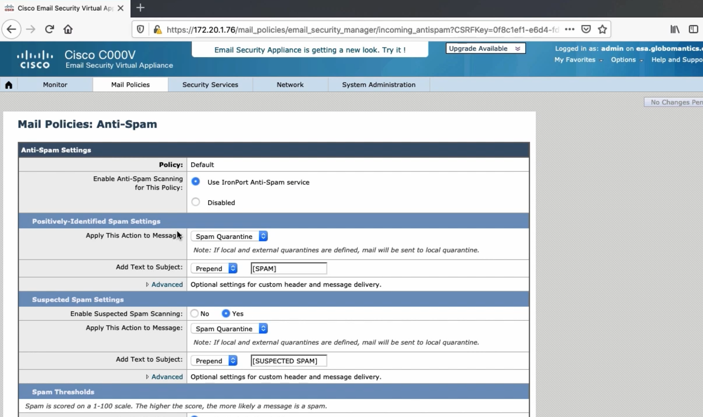
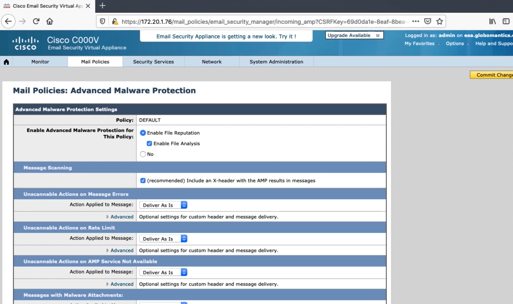
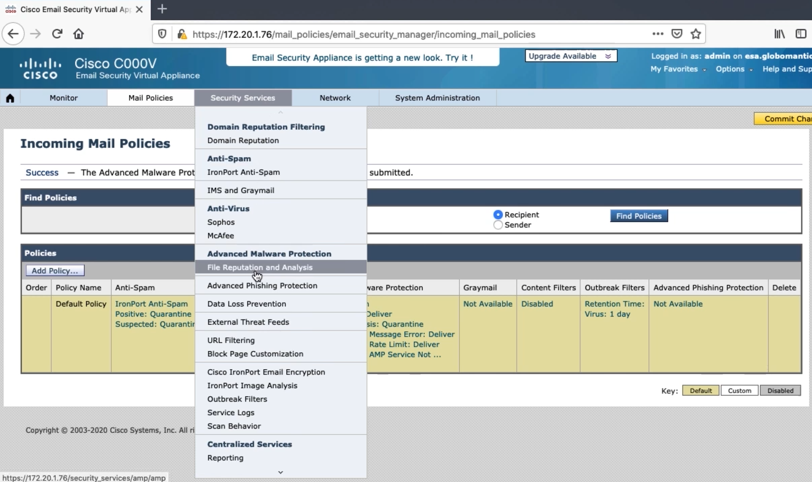
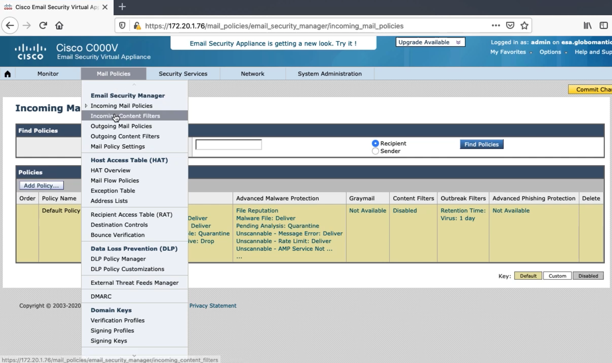
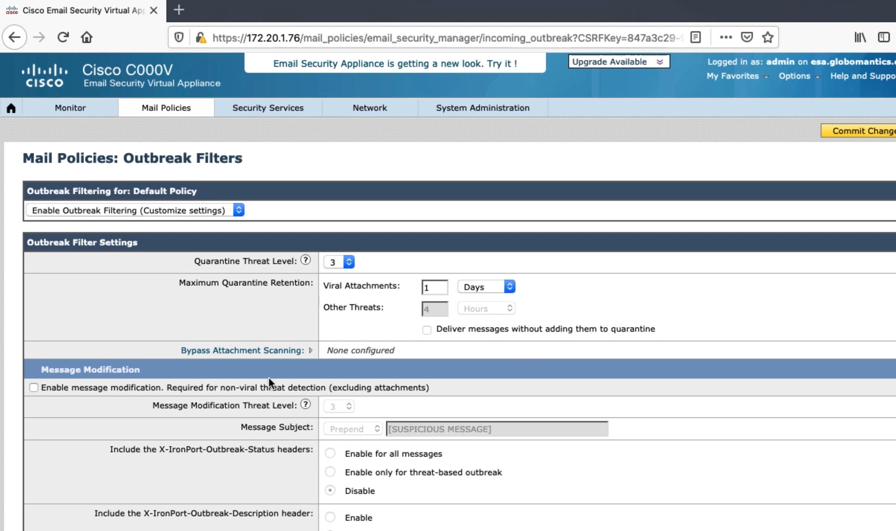
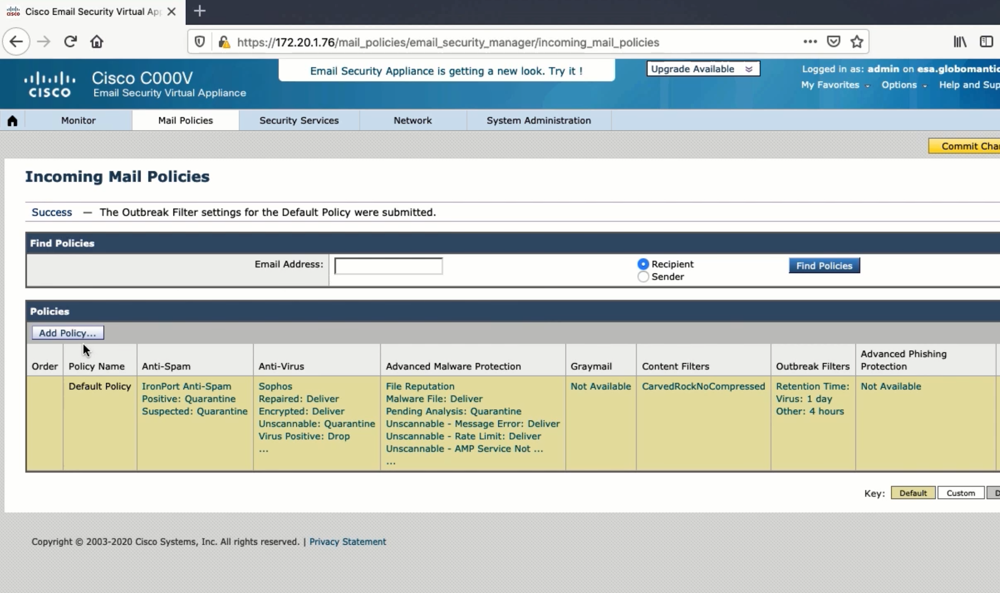

Configuring the Default Incoming Mail Policy¶
Anti-Spam Policy¶
Most spam doesn’t make it past HAT
Legit email could be black listed
Would need to create a separate policy
Two engines
Scores between 1 and 100
Positively identified spam, suspected spam, not spam
Cisco IronPort Anti-Spam¶
Detects spam and other email attacks
100,000 attributes
99% catch rate, in 1-million false positive
Cisco Intelligent Multi-Scan¶
Third party anti-spam tools scan the email
Cisco IronPort Anti-Spam then scans the email itself, and makes the final determination

Graymail Filter¶
Graymail is mail from companies that users have interacted with in the past
Uniform Experience
Users will have the same experience unsubscribing from all emails
Safer
Some unsubscribe link sare actual phishing campaigns
Better Visibility
Admins are able to see categories that graymail was classified as
Anti-Virus Policy¶

SenderBase filters out most viruses
Two systems, McAfee and Sophos
Can be usec together
Uses more resources
McAfee
Definitions to find malware
Can emulate a file in safe environment
Repair files
Sophos
Classifier to find malware
Various engines for specific file types
Can emulate, decompress, detect macros
Repair files
Advanced Malware Protection Policy¶
AMP will alert you after the fact if the file’s disposition changes so you can take action


Content Filter Policy¶

You can choose to define who the content filter applies to in the filter itself, or by creating multiple policies and only applying the filter that applies.
Outbreak Control Filters¶
Outbreaks spread new attacks quickly
Viral files, phishing attacks, or malware distribution
Cisco Threat Operations Center (TOC)
Compare global trends to baselines
ESA’s default is to stop any file that is rated as a 3 or higher.
Outbreak Control Policy¶
AMP detects threats in a different way
Could wait a long time for verdict
Outbreak looks at global picture
Non-viral threats
TOC analyzes messages and URLs

Creating an Additional Policy¶
